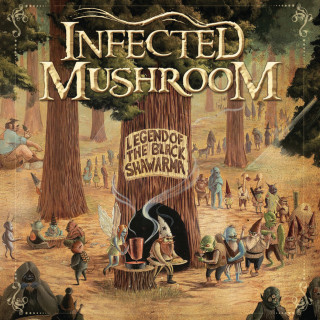

Saeed
Track by: Infected Mushroom
From the album: Legend Of The Black Shawarma
Original Song

Return to home
I feel ashamed
Again and again
Nothing to give
And no one to blame
During the day
I guess I'm okay [x2]
At night I sit by your side
Waiting for you
To give me a sign
I'm counting the days
And you have nothing to say
Ahhhhhh
I hope I can chill and stay the same
Stop the bleed inside
And feel again
Cut the chain of lies
You've been my feeding my veins
I got nothing to say to you
I hope I can chill and stay the same
Stop the bleed inside
And feel again
Cut the chain of lies
I've been beating and beating and beating myself...
Without nothing to say to you, nothing to say to you...